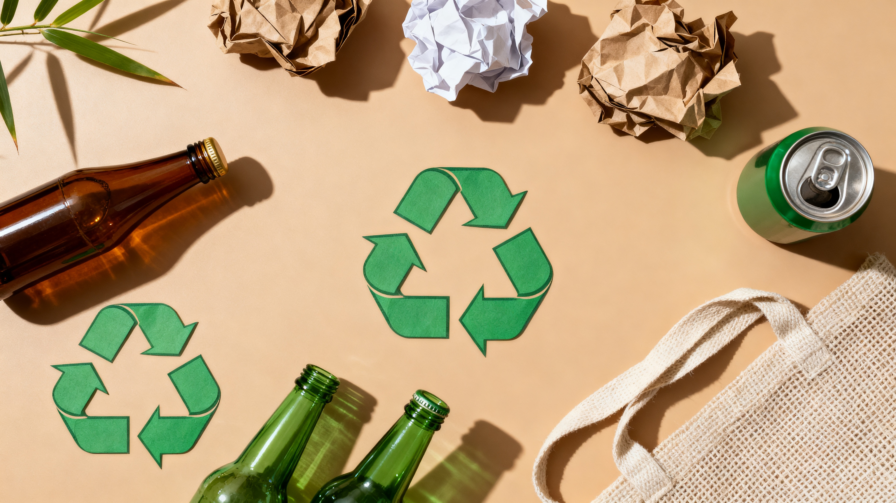

Guia de separação correta dos resíduos
Papel e papelão: caixas, jornais, revistas e folhas usadas podem ser reciclados quando não estão contaminados por gordura ou outros resíduos.
Plástico: garrafas PET, embalagens de produtos de limpeza e outros plásticos aceitos pela coleta local devem ser separados dos resíduos comuns.
Metal: latas de alumínio e aço podem ser encaminhadas para a reciclagem.
Vidro: garrafas e potes de vidro devem ser separados conforme as orientações da coleta local. Objetos cortantes precisam ser embalados com segurança.
Resíduos orgânicos: restos de frutas, verduras e cascas podem ser destinados à compostagem quando houver condições adequadas.